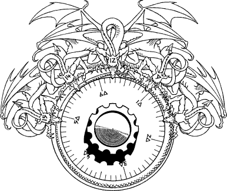

221
Beyond the doors you discover a large echoing hall, lit by a circle of torches which flare dimly in the moist gloom. The atmosphere is saturated with a malevolent power, an evil that is welling up from somewhere deep below ground. Immediately to your right you see a ladder which ascends to the upper floor of the tower, and to your left there is a wide staircase which leads down. Your senses scream a warning as you approach this staircase and begin to descend, but this time you choose to ignore your trusty instincts. The aura of evil which pervades this place has its source, and you are certain that it is the Doomstone of Darke, the very object you have sworn to destroy.
The staircase leads down to a winding torchlit hallway which passes through a series of narrow chambers, all empty and derelict. Eventually, you come to an iron portal and you stop for a few moments to examine the intricate engravings that embellish its age-blackened surface. Quickly you realize that the engravings are not mere decorations, they are part of a sophisticated combination lock which holds this door secure.
{kind=link}

A host of writhing dragons are intertwined above a dial edged with ancient numerals. Each dragon has a number engraved upon its forehead, similar to those numbers which encircle the dial. Your senses inform you that the dragon numbers form a puzzle, and by solving this puzzle you will discover the ‘key’ to this door. Then, by turning the dial to this ‘key’ number, the lock will disengage and the door will open.
Study this puzzle. When you think you have found the answer, turn to the entry in this book which is the same as your answer. 12
If you discover that your answer is wrong, or if you cannot solve the puzzle, turn instead to 70.
Footnotes
[12] The section corresponding to the correct answer will have a footnote confirming that it is indeed correct.